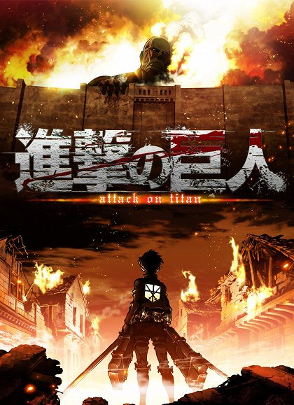

Před staletími bylo lidstvo téměř vyhubeno monstrózními humanoidními stvořeními zvanými Titáni, což lidi přinutilo schovat se ve strachu za obrovskými soustřednými zdmi. Co činí tyto obry skutečně děsivými, je to, že jejich chuť na lidské maso se nezrodila z hladu, ale z toho, co se zdá být z potěšení. Aby si zajistili přežití, začaly zbytky lidstva žít v obranných bariérách, což vedlo ke sto let bez jediného setkání s titánem. Tento křehký klid je však brzy narušen, když se kolosálnímu Titánovi podaří prolomit údajně nedobytnou vnější zeď a znovu rozpoutat boj o přežití proti lidožravým ohavnostem.
Poté, co byl Eren Yeager svědkem strašlivé osobní ztráty z rukou invazních tvorů, zasvětil svůj život jejich vymýcení tím, že se přihlásil do Survey Corps, elitní vojenské jednotky, která bojuje s nemilosrdnými humanoidy mimo ochranu hradeb. Eren, jeho adoptivní sestra Mikasa Ackerman a jeho přítel z dětství Armin Arlert se zapojí do brutální války proti Titánům a snaží se objevit způsob, jak je porazit dříve, než budou proraženy poslední hradby.
